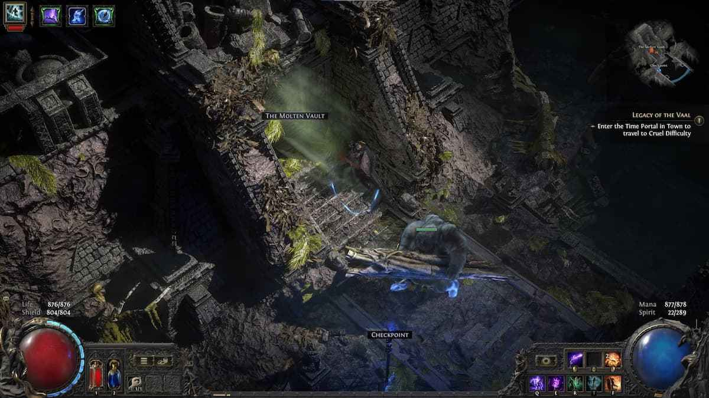
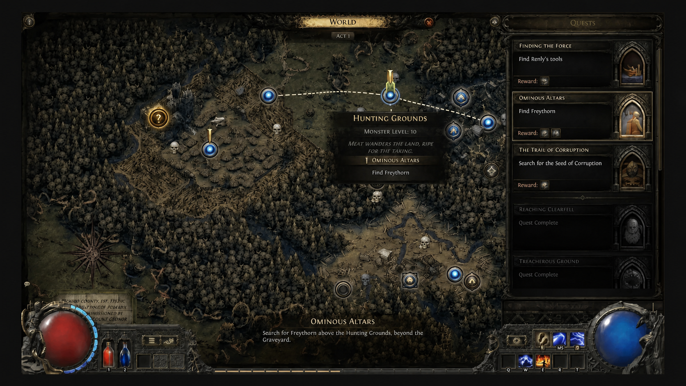

Discovered Entrances
A campaign navigation quality-of-life proposal that removes the need to enter a side area only to activate its waypoint and immediately leave.
1 · Summary
Feature overview
Players who find a side-area entrance often enter the area, activate the waypoint near its start, and leave immediately. This secures a return route before the parent area instance expires, but the interaction adds two area transitions without adding a gameplay decision.
Entering a side area only to bookmark it is optimal but repetitive.
Discovering an eligible entrance creates a provisional world-map destination.
The destination waypoint remains inactive until the player actually visits and activates it.
2 · Current player flow
Checkpoint found next to a side-area entrance
The Drowned City provides a clear example. The checkpoint and The Molten Vault transition are placed together. A player may want to continue toward Apex of Filth first, but entering the vault now is the safest way to preserve a direct return route.

- Discover the checkpoint and entranceThe player has already done the exploration required to find the side route.
- Enter the side areaThe player loads The Molten Vault without intending to run it yet.
- Activate the waypointThe visit exists only to secure a future return point.
- Return to the parent areaThe player loads The Drowned City again and continues the original route.
Freythorn creates the same route-planning friction earlier in the campaign: efficient routes commonly enter the side area, activate its waypoint near the start, and return to the Hunting Grounds before completing it later.
Design issue: the player makes one useful decision - find the entrance and defer the side area - but performs two additional transitions to record that decision.
3 · Proposed behavior
Create a provisional “Entrance discovered” destination
When a player discovers an eligible checkpoint paired with a visible area transition, the destination becomes available on the world map as an entrance - not as an activated waypoint.
- TriggerThe checkpoint beside an authored area transition is discovered.
- Map updateAn amber marker with a question mark appears for the destination area, labelled “Entrance discovered”.
- TravelSelecting “Travel to entrance” creates or reuses the destination instance under the existing rules and places the player at its entrance anchor.
- ResolutionActivating the real waypoint replaces the provisional marker with the normal waypoint state.
The feature records only what the player has actually discovered: the exterior checkpoint and the visible entrance. It does not activate the destination waypoint, complete objectives, or bypass transition permissions. Travelling through the provisional marker reproduces the same arrival the player would receive by crossing the entrance normally.
4 · UI concept
World-map marker
The provisional state uses an amber version of the existing map-node language with a question mark in the centre. It also uses explicit text so the state is not communicated by colour alone.

5 · State model
Persistent states
| State | World-map representation | Available travel | Transition |
|---|---|---|---|
| Unknown | No destination node revealed. | None. | Player discovers the paired exterior checkpoint. |
| Entrance discovered | Amber `?` marker and explicit status text. | Travel to the destination entrance. | Player activates the destination waypoint. |
| Waypoint activated | Normal waypoint marker. | Existing waypoint travel behavior. | Final state. |
Visiting the destination without activating its waypoint does not need a separate map state. The provisional entrance remains available until the waypoint is activated.
6 · Eligibility and exclusions
MVP scope
Eligible
- Campaign areas
- Authored checkpoint-transition pairs
- Destinations with a safe entrance anchor
- Destinations whose name is already revealed at the transition
- Existing quest and party gates remain valid
Excluded
- Boss arenas and trials
- Cutscene or scripted-entry areas
- Hidden destinations
- Special or temporary instances
- Any transition where entering is meaningful progression
7 · Edge cases
Questions for prototype and implementation review
| Area | Question | Safe default for an MVP |
|---|---|---|
| Party state | Who receives entrance discovery? | Use the same ownership rule as checkpoint discovery. |
| Instance lifecycle | Reuse a live destination or create a new one? | Use the existing area-travel instance rules. |
| Quest gates | Can the outside checkpoint be found before entry is legal? | Quest and transition permissions always veto the marker. |
| Arrival safety | Is the entrance anchor always safe and valid? | Only include authored destinations that pass validation. |
| UI language | Can amber be confused with quest state? | Pair colour with the `?`, status label, and different action copy. |
| Controller | How is the provisional node focused and confirmed? | Use the normal world-map navigation order and explicit tooltip. |
8 · Separate controller note
Allow an L3 binding
Controller players can assign many actions, but the left-stick click is not generally available as a bindable input. Making L3 assignable would let players place a frequently used utility action - such as the overlay-map toggle - on that button.
This is a separate quality-of-life request, not part of the Discovered Entrances feature.